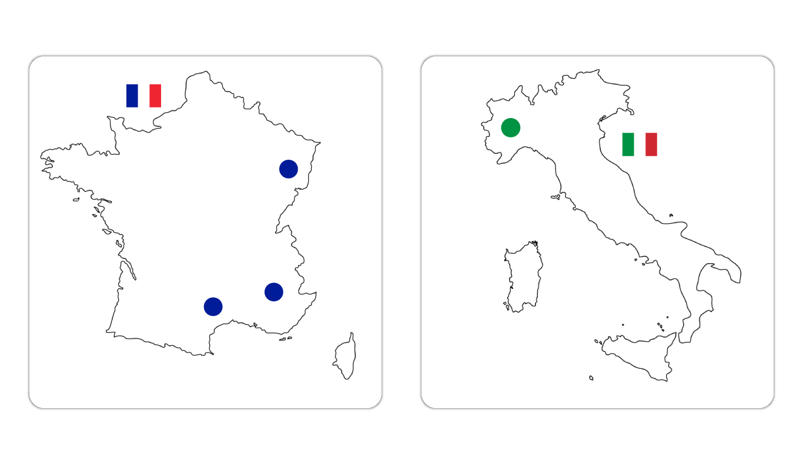
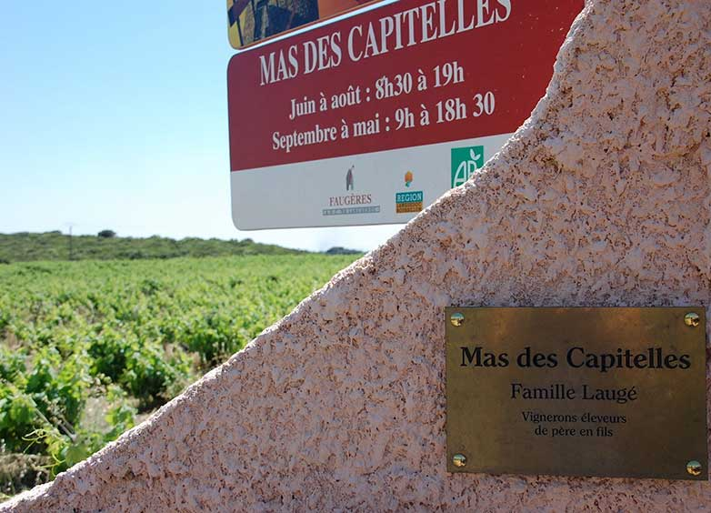
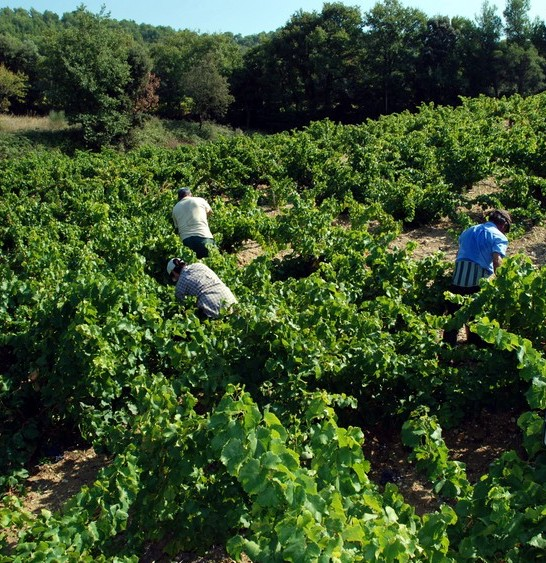
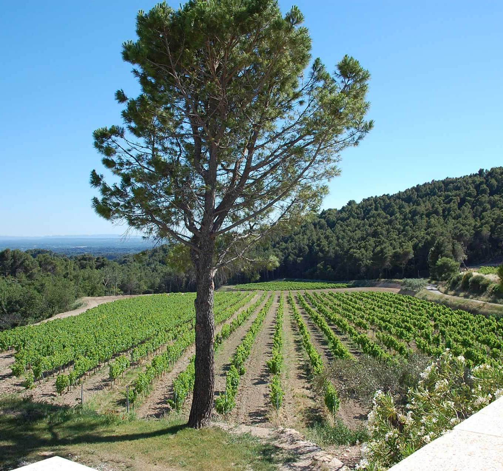
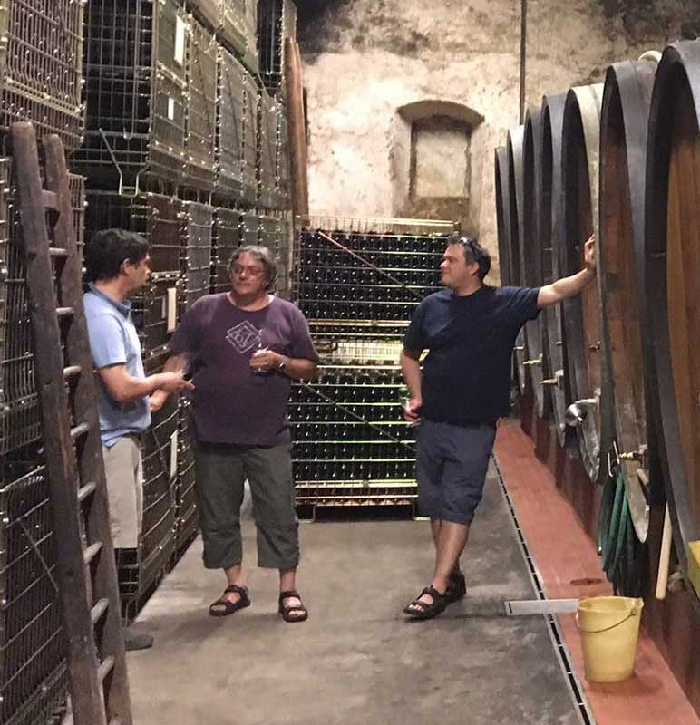
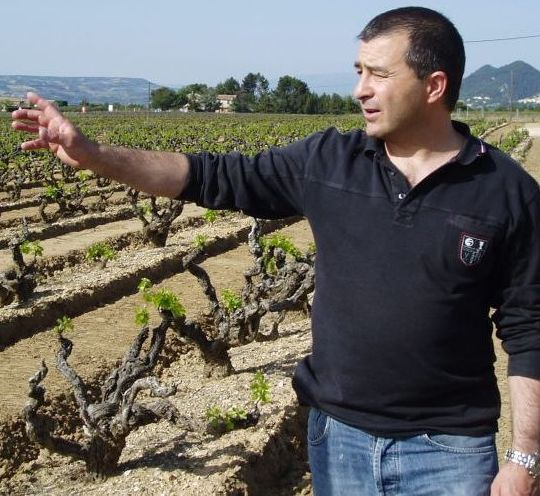

Vinmagere
På denne side, kan du læse om vores fantatiske vinmagere rundt omkring i Frankrig og Italien.
Nedenfor kan du se 2 kort over henholdsvis Frankrig og Italien. Du kan klikke på de forskellige nåle på billedet, og kort læse om de vingårde vi samarbejder med.
Hvis du har god tid, og går lige så meget op i historien om vine, kan du scroll længere ned på siden, og finde en større og mere beskrivende historie omkring hver vingård.
TRYK PÅ PRIKKERNE PÅ KORTET OG LÆS OM VORES VINGÅRDE
Titel
-
Clos De Caveau
Første gang vi mødte Henri Bungener var i sommeren 2014. Her opdagede vi, at på toppen af Vacqueyras laver de helt unikke vertikale vine med stor karakter og smag.
Henri overtog vingården fra sin fader i 1994, der havde købt gården i 1976 af Steven Spurrier (velrenommeret vinekspert). Faderen var en af de første, der var fast indstillet på, at jorden skulle drives biodynamisk, hvilket var meget kontroversielt i slut 70érne – start 80’erne. Men han holdt ved og stod fast, så Le Clos de Caveau i dag står som en fremragende arkitekt og banebryder indenfor biodynamisk vindyrkning og de blev de første der 1989 (Vacqueyras og Gigondas), der fik certifikationen biologiske/økologiske.
I Henris unge dage gik han og havde fornemmelsen af, at vinen kunne laves endnu bedre, så da han overtog gården, lavede han 12 forskellige blandinger af druerne for at finde frem til præcise blanding, der gav den bedste smag, sammenhæng og udtryk. De forskellige parceller, hvor henholdsvis Grenache og Syrah druerne vokser, giver forskellige smag afhængig af, hvor på grunden de vokser – herunder hvilken højdemeter de står på. Alt dette kræver præcision, omtanke og akkuratesse, og det har han i mangefold.
På grunden dyrkes stokkene med nænsomhed og med mange års erfaring, der har givet en ekstrem stærk koncentration, og et ubeskriveligt godt ”Terroir” bestående primært af ler, limesten og kalk. Eksemplificeret ved deres ”Lao Muse”, der kun bliver produceret i udvalgte år – og kun mellem 1000 til 2800 flasker.
Lokationen med 12 hektar vinmarker og 8 hektar skov er en fantastisk beliggenhed med højdemeter og træer, der omgiver hele grunden. Henri fortæller, at skoven beskytter vinmarkerne og skaber biodiversitet, som er nødvendig for de økologiske vinstokke. F.eks. kan der være flere insekter pga. træerne, men samtidigt er der flere fugle, som skaber et økologisk miljø – og selvsagt virker Mistralvinden som en hårtørrer efter regnen.
Vinene fra Le Clos Caveau er fyldige og kraftfulde med silkebløde tanniner og passer perfekt til det danske køkken. - 
-
Vincent Scoepfer
I sommeren 2017 besøgte vi Alsace i Frankrig, hvilket var en stor og berigende oplevelse. Modsat mange andre vinområder vi har besøgt, så ligger parcellerne side om side på bjergene, mens byerne og bygninger er samlet ved foden af bjerget.
Vi var så heldige, at vi mødte Thierry og hans broder Vincent i deres vinhus ”Vincent Scoepfer”, der er diskret placeret i den hyggelige by Eguisheim. De har eksisteret siden 1656, og de er 15. generation af vinbønder, så det er en lang historie indenfor vinproduktion, familien har bag sig. Familien råder i dag over 12 hektar vinstokke, og yderligere 5 hektar bliver tilføjet indenfor det næste års tid.
Lignelsen om ”Den fortabte søn” er på sin egen måde historien om Thierry og hans broder. Thierry drog som ung ud i verden og begyndte at arbejde for et stort internationalt vinfirma. De næste 23 år rejste han verden rundt og besøgte vingårde – både de små og de store, og han oparbejdede herigennem en kæmpe indsigt i vinfremstilling og i de forskellige terroir og deres betydning. Da hans forældre ville trække sig tilbage, valgte Thierry at vende tilbage til sin hjemstavns vingård, hvor hans broder i alle årene havde arbejdet på familiens vingård. Det bør dog nævnes, at dette er det eneste punkt, hvor lignelsen om “Den fortabte søn” ligner Thierry og hans broder.
En af de erfaringer, Thierry havde fået med sig, var, at en for stor del restsukker giver for meget ”supermarkedssmag” efter hans opfattelse. Derfor arbejder de med at holde restsukkeret på et minimalt niveau – eller næsten intet restsukker – i hele deres produktion, hvorfor deres vine rammer den exceptionelle smag, som er med til at gøre deres vine helt enestående. Deres efterbehandling af vinen er også kompleks, da alle de hvide vine, de producerer, går igennem eg, hvilket er ekstraordinært for Alsace. De har både 1200 liter egetønder og helt op til 5100 liter store egetønder, der varierer meget i alder. Den ældste egevintønde på 5100 liter er mere end 150 år gammel, så den kan kun afgive en lille del af fadsmagen – men om end en betydningsfuld smag. Alle druerne bliver håndhøstet, da familien ved, at selekteringen af druerne giver den bedste smag. Brugen af maskiner er helt udelukket i høstningen af deres marker.
- 
-
Domaine les Teyssonnières
Domænet er et familiedomæne, som blev etableret i 1838.
Franck Alexandre er 4 generation af familien på stedet. Hans oldefar var en murer fra Savoien, der kom til Gigondas for at arbejde ved opførelsen af Chateau Raspail og fandt byen og dens vine så attraktive, at han købte den ejendom, der nu er blevet til Domaine les Teyssonnières.
Der hører 12 ha. til domænet: 10 ha. Gigondas, 1 ha. Cotes du Rhone og 1 ha. IGP
Halvdelen af produktionen sælges til Perrin et Fils, som bruger den til Gigondas les Gilles og i gode år til Gigondas Vieilles Vignes.
UNDER OPBYGNING - 
-
Mas Des Capitelles
I den lille by Faugéres på en lille sydvendt bjergside i Languedoc tæt på middelhavet, finder vi Mas des Capitelles.
Med 24 hektar vinstokke, der står i 250 meters højde og smiler ud mod Middelhavet og nyder den stærke sol og Mistralvinden, er dette det nye (gamle) område, der blomstrer enormt disse år. Med tilgangen af højtuddannede ønologer og vinfolk bl.a. fra Bordeaux og fra pengestærke folk fra hele verden, er Lanquedoc gået fra at være et område, der satsede på kvantitet til et område, der emner af stor kvalitet, hvilket gør det til et af de mest interessante områder i Frankrig i disse år.
Vingården er opkaldt efter de små kapeller, som de gamle hyrder overnattede i, når de drog op af bjerget og skulle bruge husly. Kapellerne er en byggemæssig udfordring pga. deres kompleksitet. Der er 2 små kapeller på deres vinmarker.
Da vi første gang besøgte dem i 2016 og mødte Jean Laugé og hans søn. Hans søn kom først senere på eftermiddagen. Grunden til, at der gik et par timer, før sønnen var til stede, er, at de ofte starter dagens arbejde kl. 4.00 om morgenen i vinmarkerne, hvor de arbejder til kl. ca. 10.00, hvorefter de fortrækker til skyggen, da solen er for stærk i løbet af dagen, og derfor umuliggør arbejdet i markerne. Sidst på dagen, når solen trækker sig tilbage, påbegynder igen arbejdet i markerne.
De er meget bevidste omkring, hvordan de vil dyrke jorden og beskytte den i fremtiden, ligesom de mener, at det er afgørende at håndtere den optimalt – derfor er de organiske og biodynamiske i deres arbejde og har været det siden 2011. Processen imod organisk og biodynamisk vinbrug startede i 2007.
De er 10. Generation af landmænd, hvoraf de sidste 3. generationer udelukkende har arbejdet med og dyrket vin. De arbejder traditionelt på deres vingård, der er præget af en tør og sydvendt bjergside, hvor stokkene er mellem 60 og 100 år gamle, og alle druer bliver håndhøstet.
- 
-
Meinardi
Treiso er en typisk by beliggende i Nedre Langa blandt bølgende bakker, et stærkt og generøst terræn, der overfører disse egenskaber til de vin, der er produceret i dette område.
Et område, der med tre DOC og to DOCG-vine kan betragtes som en af de bedste i verden. På disse bakker har gården "IL CRAVÉ" i fire generationer produceret kvalitetsvine med respekt for naturen og bevidst begrænset mængderne af druer produceret pr. hektar.
Vinificeringen er stadig den traditionelle metode med metoder, som "bedstefar Pierin" ønskede at formidle vider til barnebarnet Corrado Meinardi, som i dag er ejer af virksomheden.
UNDER OPBYGNING - 